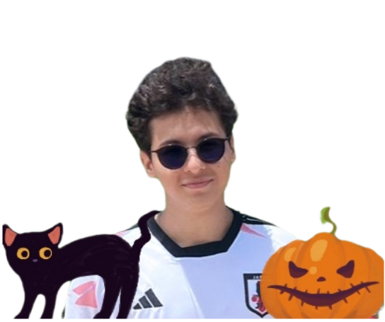

Sobre Mim

Iago Rafael (Leafar)
19 anos
Amapá, Norte do Brasil
Estudante de Engenharia da Computação na Universidade Federal do Rio Grande do Norte (UFRN) - Ingresso em 2023.2
Passado e Presente
- Carreira Musical: Atuei como músico por alguns anos, desde a infância, especializado em piano e teclado, mas precisei interromper minha carreira devido a problemas pessoais e um acidente. Apesar de piano e teclado terem curvas de aprendizado semelhantes, suas abordagens são completamente diferentes. Enquanto o piano se desenvolve em melodias clássicas e seu som específico, o teclado é multifacetado, adaptativo e eclético, podendo adotar sons de outros instrumentos quando necessário.
- Vida Acadêmica: Aprovado na UFRN em 2023 e inicei os estudos no segundo semestre. Atualmente, estou no meu terceiro semestre.
- Línguas Estrangeiras: Domínio Intermediário de Leitura e Interpretação de Texto em Inglês.
Interesses
- Música: Grande paixão, mesmo após eu deixar a carreira profissional. O tempo todo estou ouvindo música, me ajuda a focar, acalmar, treinar, trabalhar e viver. Meu 2° Oxigênio.
- Videogames Gosto de jogar em meu tempo livre. Atualmente, não tenho jogado tanto devido ao foco na Universidade. Mas tento jogar regularmente.
- Fotografia: Por estar constantemente procurando novas experiências, acabei encontrando boas paisagens, vistas e oportunidades para desenvolver meu interesse por fotografia.
- Leitura: Leio livros variados, com destaque para psicologia, investimentos ou livros de fantasia, steampunk, cyberpunk ou simplesmente ficção científica.
- Programação: Grande interesse em aprender, principalmente para minha carreira profissional como Engenheiro da Computação e Programador.
- Cozinhar: Hobby que desenvolvi recentemente graças ao constante interesse por novas experiências, com foco em culinária e drinks. Aprendi a fazer drinks e criar meus próprios apenas para entretenimento próprio e para rolês em churrascos com amigos.
- Academia: Pratico regularmente, 5 ou 6 vezes na semana, estou por lá. Outra atividade que consegue aliviar minha ansiedade e me manter tranquilo.